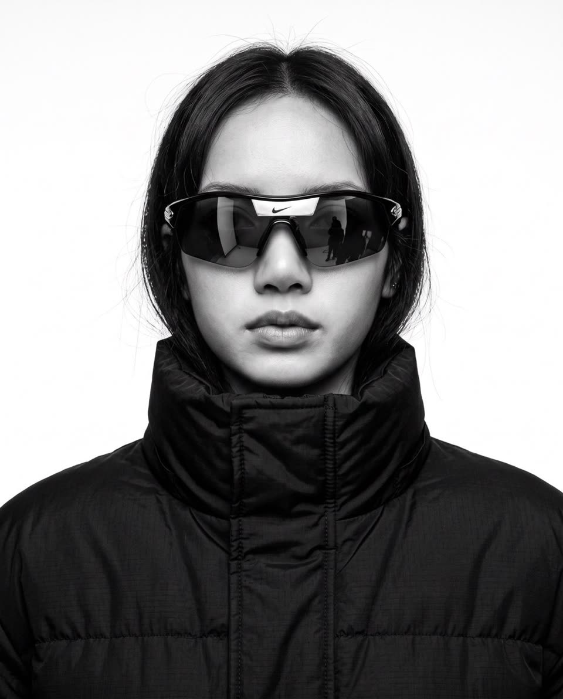

B&W campaign portrait: wraparounds + funnel neck
WRD-028WardrobeMulti-model (GPT Image 2.5 / Nano Banana 2 / Flux 3 / Seedream 5)by SaaS Junction ✦ Daily AI News & Prompts (@SaasJunctionHQ)2026-10-05

Campaign-grade B&W portrait: sport wraparound shades, black funnel-neck, blown-out white backdrop, raw skin.
Prompt
{
"prompt_name": "High-Contrast B&W Studio Portrait – Part 1 (Subject)",
"usage": {
"input_required": "ONE of: a person's name OR an uploaded reference photo. Nothing else needed.",
"if_name_given": "Render that person's recognisable face, age, hair and facial hair accurately. Do not invent a different identity.",
"if_image_given": "Preserve facial identity, bone structure, skin tone, age, hair and facial hair from the reference. Restyle and re-light only.",
"variable": "{{SUBJECT}}"
},
"subject": {
"identity": "{{SUBJECT}}",
"count": 1,
"pose": {
"head": "Straight on, no tilt, chin level, perfectly frontal",
"shoulders": "Square to camera, relaxed, filling the lower frame",
"gaze": "Straight into the lens (eyes only faintly visible behind dark lenses)"
},
"expression": "Neutral, stoic, unsmiling, lips closed and relaxed, serious and composed",
"hair": "Keep natural hairstyle; fine strand detail, flyaways, texture catching light",
"facial_hair": "Keep what the subject naturally has; coarse, individual, slightly salt-and-pepper detail if applicable",
"skin": {
"texture": "Raw, unretouched, hyper-detailed: visible pores, fine lines, forehead creases, blemishes, stubble shadow",
"retouching": "None. No smoothing, no plastic skin",
"tone_rendering": "Bright highlights on forehead, nose bridge, cheekbones; deep sculpted shadows under cheekbones, jaw and nose"
}
},
"eyewear": {
"type": "Performance sport wraparound sunglasses, 2000s Oakley-style, centred on the face",
"variant_pool_pick_one": [
"Half-rim black shield frame with white/chrome icon hardware on temples, smoky grey tinted lenses with eyes faintly visible",
"Silver/gunmetal oval wraparound frame with mirrored dark lenses and metallic icon hardware",
"Black sport shield with single mirrored lens panel and small white swoosh-style logo on brow bar, chrome temple icons",
"Black half-rim blade-style frame with grey gradient lenses"
],
"lens_reflections": "Glossy lenses reflect the studio: bright rectangular softbox shape, dark crew/equipment silhouettes",
"material_detail": "Glossy black or brushed metal, crisp specular highlights, sharp edges"
},
"wardrobe": {
"garment": "Oversized black technical high-collar / funnel-neck outerwear",
"variant_pool_pick_one": [
"Matte jersey/neoprene funnel neck with diagonal zip seam and thick rolled collar standing up to the jaw",
"Padded nylon puffer with tall quilted collar, storm flap, hidden zip placket, ripstop texture",
"Matte technical shell with oversized stand collar and draped folds",
"Insulated black jacket with high collar, vertical zipper, visible seams and stitching"
],
"color": "Solid black, no logos, no prints",
"fabric_rendering": "Matte with subtle sheen on folds; visible stitching, quilting, weave; deep blacks with tonal separation",
"styling_intent": "Futuristic, utilitarian, minimalist, high-fashion sportswear campaign"
}
}Tags: sportswear, black and white, campaign